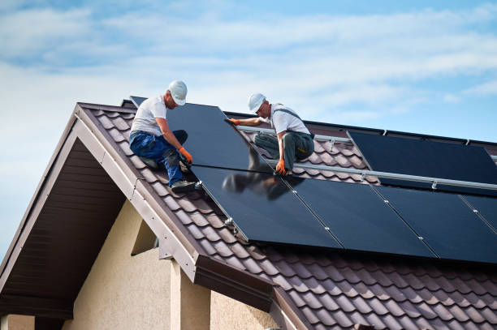
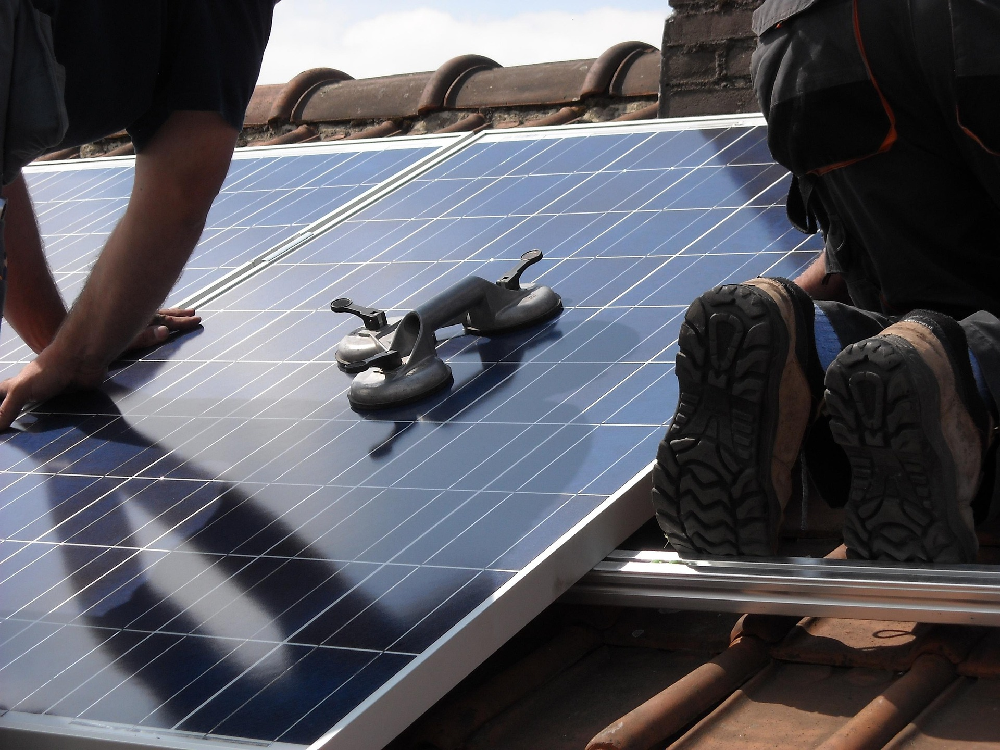

Nuestros Servicios
Acompañamos a nuestros clientes en todo el proceso: desde la primera consulta hasta el mantenimiento de su sistema solar.

Instalación de paneles solares
Diseñamos e instalamos sistemas fotovoltaicos adaptados al consumo eléctrico de tu hogar o negocio, usando equipos de calidad y personal certificado.

Mantenimiento
Ofrecemos revisiones periódicas, limpieza de paneles y verificación del sistema para asegurar su correcto funcionamiento durante todo el año.
Asesoría energética
Analizamos tu consumo eléctrico actual y te recomendamos el sistema solar más conveniente según tus necesidades y presupuesto.